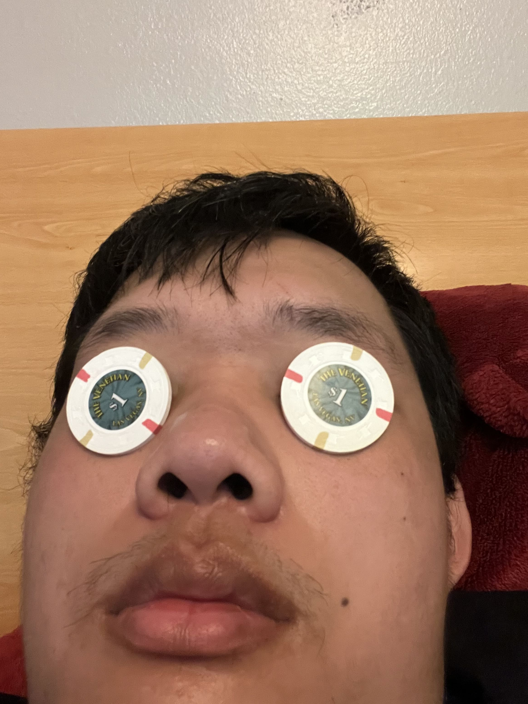

I like playing games, and I think oatmeal raisin cookies are the best kind of cookie. I was born on June 2nd, 2005 and am currently 19 years old. Some of my favorite games are Omori, Oneshot, Neon White, Persona 4 Golden, and Ace Attorney. I hate Marvel Rivals.
I guess you could say I have an eye for gambling. I think my dad stole these from a casino.